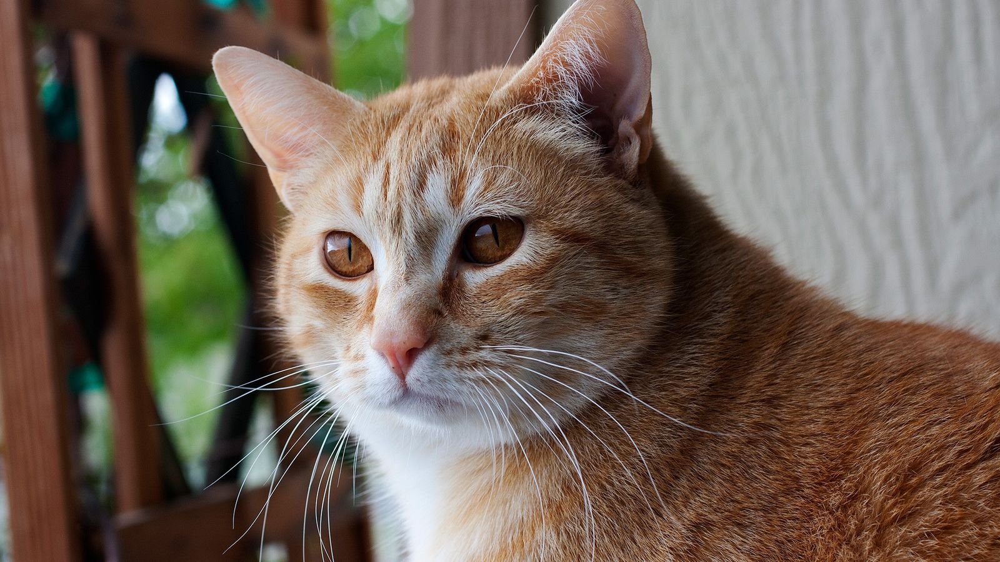

GATOS EN ADOPCION
jslksjlkdjlkjkljdlkjlkfjlkjelkfjlekfjkleflkejffklelkfjlkejfeegegegegwgwgegewg
brkjfljkfjkhjkwhgjkhwejkghjkewhgjkhjghjkhgjkehgkjehgehgejkgheghjkeghehgjkeghj
fggkejffkjhkjghkjghkjerhgkjhgkjehjkehgjgegjkehgjkehgkjeghjekghekjghjkeghjkegh
Nuestros GATOS que buscan familia:
 Odin
Odin
 Dorito
Dorito
 Sufle